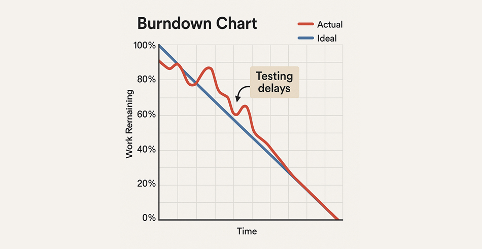
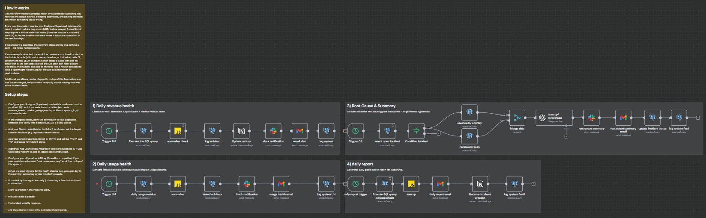

PUBLICATION
Predicting Project Delays with Machine Learning
Case study on detecting early signals of delivery risk to support proactive decision-making.
Result: predicted 41% of delays before they happened.
Result: predicted 41% of delays before they happened.

PUBLICATION
Product Health Score & Unified Monitoring
Unified monitoring approach supported by automation to improve reliability and visibility.
Impact: −35% critical incidents.
Impact: −35% critical incidents.